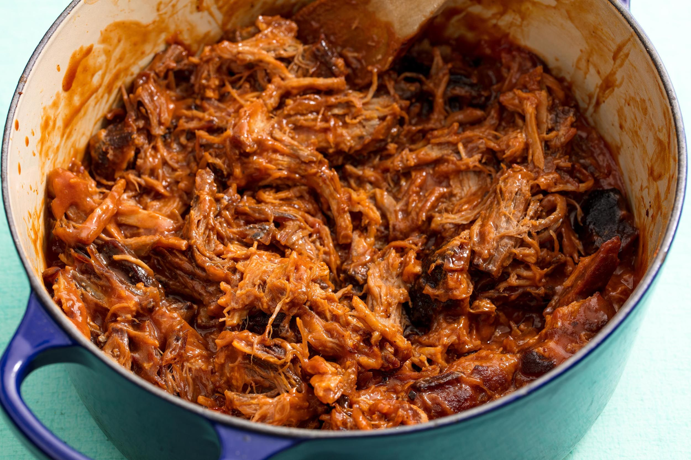

Dr. Pepper Slow Cooker Pulled Pork

Description
Dr. Pepper Slow Cooker Pulled Pork is the perfect way to server a crowd. It's easy, tender, delicious and everyone always loves it!
Ingredients
- 1 pork butt/pork shoulder roast 4-5lbs
- Salt pepper & garlic powder
- 1 onion sliced optional
- 1 can Dr. Pepper
- 3/4 cup barbecue sauce or to taste
- Rolls & coleslaw for serving
Steps
- Place the onion in the bottom of the slow cooker. Rub the outside of the roast with salt, pepper and garlic powder.
- Pour the Dr. Pepper over the pork and cook on high 4-5 hours or on low 7-8 hours.
- The meat will be very tender. Using 2 forks, shred the pork and place back in the juices.
- Add barbecue sauce to taste. Allow to cook an additional 30-60 minutes if desired.
- Serve on crusty rolls with coleslaw if desired.